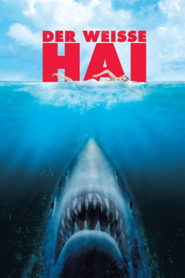

#68 Der Weiße Hai
Alternativ: Jaws
Auszeichnungen: 3 Oscars gewonnen für 1 Oscars nominiert 1 GoldenGlobes gewonnen 1 BAFTA-Awards gewonnen
 
 IMDB-Wertung: 8.0 / 10
IMDB-Wertung: 8.0 / 10  IMDB-TOP-Platzierung: 238
IMDB-TOP-Platzierung: 238  Metascore: 87
Metascore: 87 
Ein Weißer Hai terrorisiert eine Badeinsel an der amerikanischen Atlantikküste. Besonnene Einheimische unter Führung von Polizeichef Brody wollen alle Strände schließen und zur großen Jagd blasen, während die Schar der Kaufleute und Gastwirte angesichts der einträglichen Badesaison lieber zur Tagesordnung übergeht und sich damit auch durchsetzt. Als der Hai erneut zuschlägt, bildet Brody mit dem erfahrenen Haifänger Quint und dem Ozeanologen Hooper ein Jagdteam und rückt dem Gegner auf See zu Leibe.
Jahr: 1975
Dauer: 124 Minuten
FSK: 16
Land: USA Studio: UniversalTonspuren: DTS - ,
Untertitel:
Auflösung: 1080p (1920×816) Größe: 11468 MB
Genre: Abenteuer, Drama, Thriller
Regisseur:  Steven Spielberg
Steven Spielberg
Drehbuch: Peter Benchley, Carl Gottlieb, Peter Benchley
Soundtrack: John Williams
Darsteller:
 Roy Scheider als Brody
Roy Scheider als Brody Robert Shaw als Quint
Robert Shaw als Quint Richard Dreyfuss als Hooper
Richard Dreyfuss als Hooper- Lorraine Gary als Ellen Brody
 Murray Hamilton als Vaughn
Murray Hamilton als Vaughn Carl Gottlieb als Meadows
Carl Gottlieb als Meadows- Jeffrey Kramer als Hendricks
- Susan Backlinie als Chrissie
- Peter Benchley als Interviewer
 Joseph Oliveira als Swimmer , uncredited
Joseph Oliveira als Swimmer , uncredited Steven Spielberg als Amity Point Lifestation Worker , uncredited
Steven Spielberg als Amity Point Lifestation Worker , uncredited- Jonathan Filley als Cassidy
- Ted Grossman als Estuary Victim
- Chris Rebello als Michael Brody
- Jay Mello als Sean Brody
- Lee Fierro als Mrs. Kintner
- Jeffrey Voorhees als Alex Kintner
- Craig Kingsbury als Ben Gardner
- Robert Nevin als Medical Examiner
- John Bahr als Beach Guitarist , uncredited
- Gilbert Brand als Victim , uncredited
- Bruce als Jaws , uncredited
- Allison Caine als Additional Townswomen , uncredited
- Jean Canha als Fat Lady , uncredited
- Edwin C. Carlson als Man with Goff , uncredited
- Henry Carreiro als Felix , uncredited
- Robert Carroll als Mr. Polk , uncredited
- Edward Chalmers Jr. als Mr. Denherder , uncredited
- Robert Chambers als Charlie , uncredited
- Denise Cheshire als Swimming Chrissie - First Victim , uncredited
- Fritzi Jane Courtney als Mrs. Taft , uncredited
- Gregory S. Dole als Sonar Operator , uncredited
- Cyprian R. Dube als Mr. Posner , uncredited
- Stephen Earle als Converted Extra , uncredited
- David Engelbach als Research Assistant , uncredited
- Dorothy Fielding als Girl in Music Store , uncredited
- Francis A. Frank als Boat Rental Man , uncredited
- Brendan Gallagher als Man with Dynamite , uncredited
- Elizabeth K. Gifford als Island Wife , uncredited
- Willis B. Gifford als Man , uncredited
- Alston Goff als Lynwood Shop Keeper , uncredited
- Paul Goulart als Clarinet Player in Music Store , uncredited
- Beardsley Graham als Mainlander , uncredited
- Eleanor L. Harvey als Motorboat Skipper , uncredited
- Mike Haydn als Bonfire Guitarist , uncredited
- Richard P. Hewitt als Walter , uncredited
- Carla Hogendyk als Artist , uncredited
- Wally Hooper Jr. als Harry , uncredited
- Janice T. Hull als Lady Fisherman , uncredited
- Stephanie Hull als Swimming Girl , uncredited
Datei: X:\1975\Weiße Hai, Der (1975, FSK16, 1920x816).mkv seit 02.02.2015
Festplatte: HD 1971-1979
 Es gibt insgesamt 27 Filme in der Gruppe '1975'
Es gibt insgesamt 27 Filme in der Gruppe '1975'